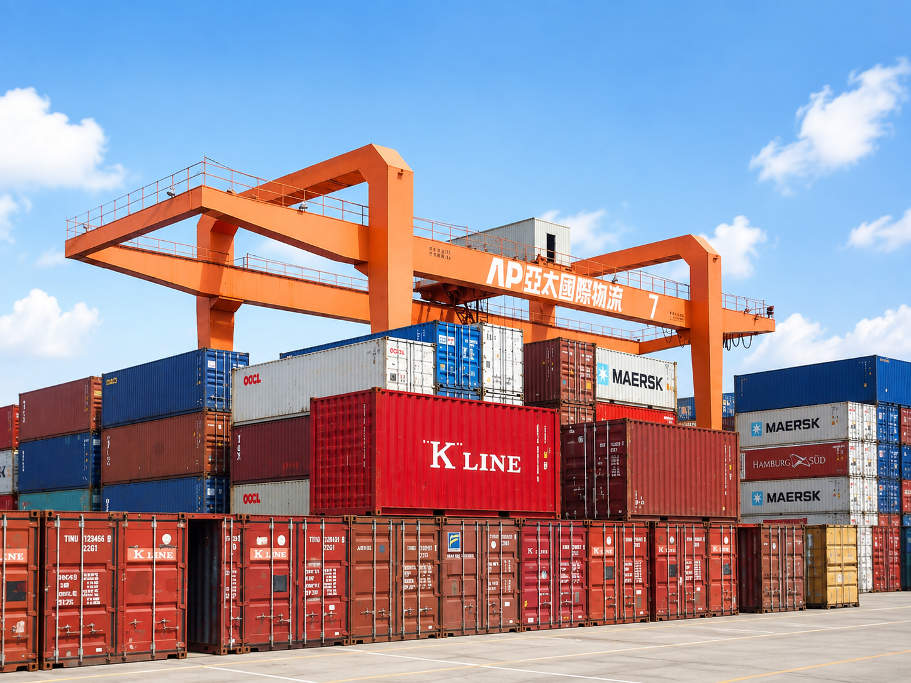

亞太五十週年
50周年是一個重要的里程碑，也是一個重新確認公司永續發展承諾的時刻。 公司將繼續秉持著創新、負責任和持續改進的價值觀，為未來的五十年鋪墊道路，實現更加卓越的成就。

50周年是一個重要的里程碑，也是一個重新確認公司永續發展承諾的時刻。 公司將繼續秉持著創新、負責任和持續改進的價值觀，為未來的五十年鋪墊道路，實現更加卓越的成就。
振華堆高機代理銷售、港機零組件發貨倉庫、車機再利用規劃、碼頭車機合作案。
成立 ALPHA TOTAL SOLUTION PTE LTD，延伸海外市場。
太報於 2017 年誕生，2018 年正式登記成立太報文化事業股份有限公司，跨足媒體文化事業。
亞柏加油站轉型為亞柏油品事業，深化油品事業版圖。
成立亞柏會館，拓展運動休閒事業版圖。
跨足運動休閒事業，成立亞柏羽球隊。
民國 95 年 10 月成立亞柏國際旅行社，投入綠色休閒產業等休旅服務。
民國 95 年成立亞柏 EZ 購物網，以 e 世代的服務型態，跨足網購業。
民國 90 年公司事業跨足油品市場步入多角化經營型態。
民國 89 年隸陽明海運公司高雄港碼頭之裝卸業務委由本公司承作。
民國 87 年通過 ISO 品保驗證，水準已臻國際標準。
民國 83 年擴大營業規模及服務範圍，開啟碼頭裝卸業務。
成立世新貨櫃企業股份有限公司，主力於空櫃儲轉及貨櫃維修清洗服務，曾多次獲得全球最佳櫃場之殊榮。
民國七十年作業流程全面電腦化，服務水準達國際標準。
民國六十二年九月，本公司創立並從事貨櫃儲運、維修相關業務